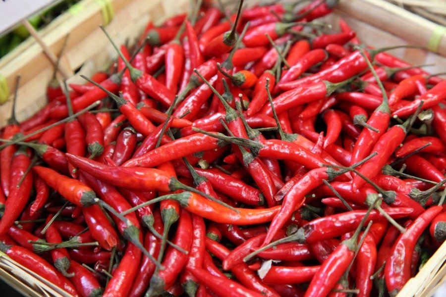
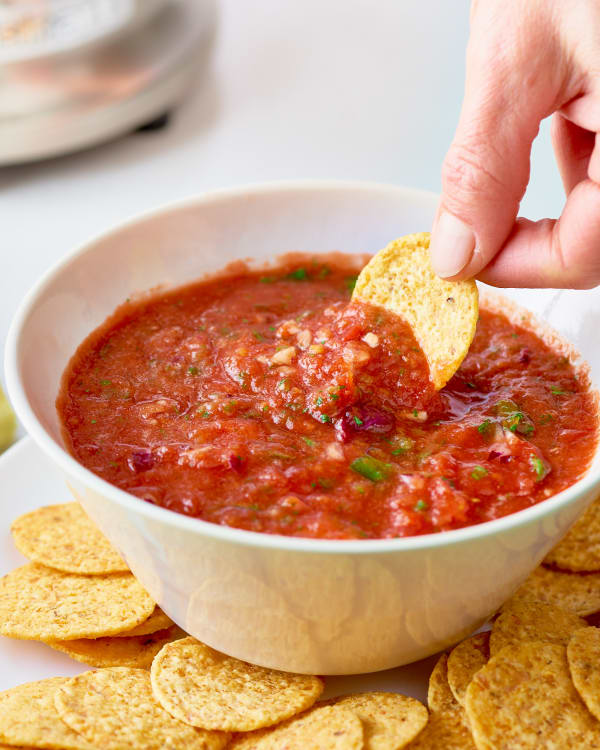
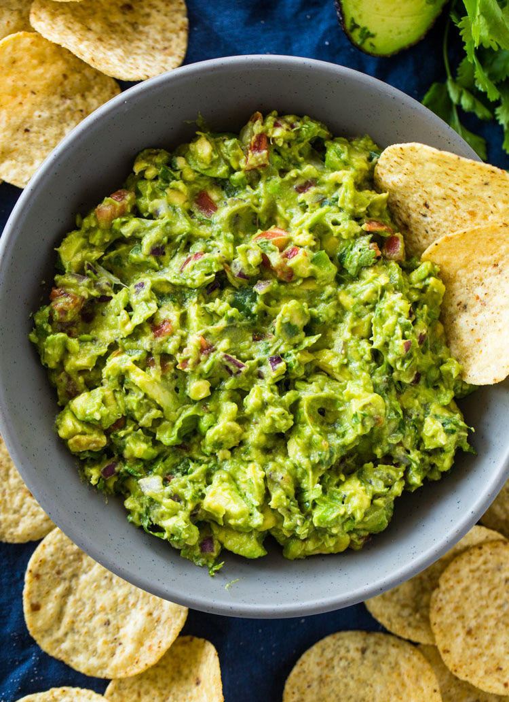
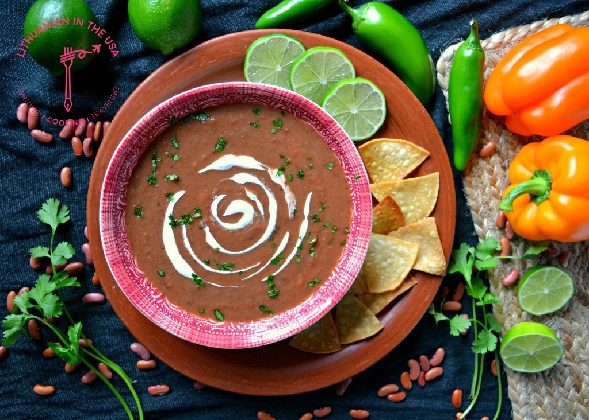
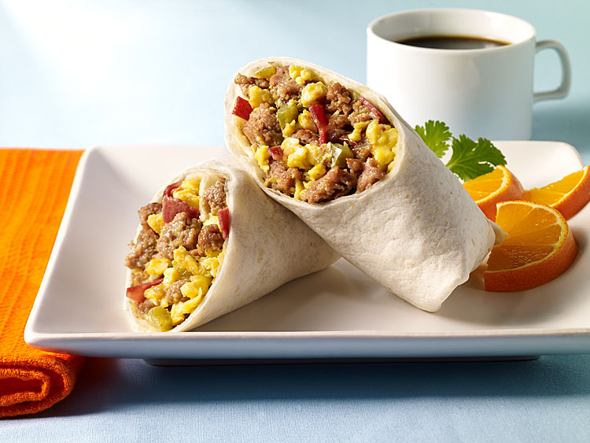

Meksikietiška virtuvė nėra įprasta rytų Europos šalyse, tačiau, mano nuomone, ji verta dėmesio.
Meksikietiška virtuvė pasižymi plačiu prieskonių panaudojimu ir aromatų įvairove. Šios virtuvės pagrindas - kukurūzai ir pupos. Daugelis patiekalų ruošiami su aštriais prieskoniais bei įvairiais padažais, pavyzdžiui, salsa ar gvakamolė.

Žemiau pateikiu meksikietiškos virtuvės receptus, kurie yra labai populiarūs. Rekomenduoju išbandyti:
|
 |  |
| Tako | Trinta pupelių sriuba | Meksikietiškos buritos |
Austėja Laurikaitytė